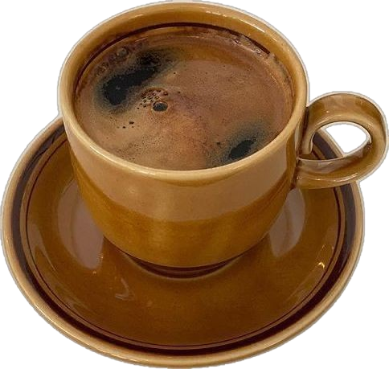
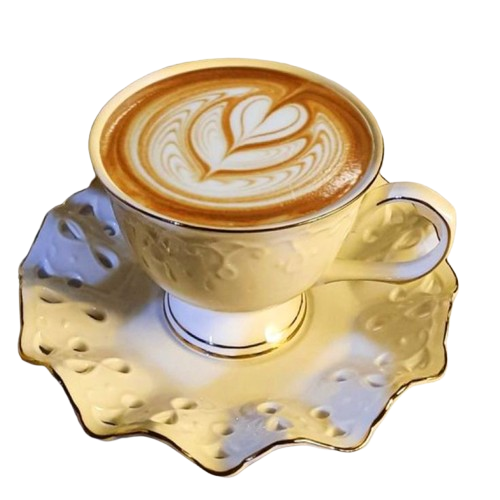

Learn more about us and our recipes

Expresso
An intense and highly concentrated beverage crafted by forcing purified hot water under immense pressure through finely ground, dark-roasted whole beans, resulting in a bold, full-bodied single shot topped with a silky layer of golden crema—originating in early 20th-century Italy with a precise 1:2 coffee-to-water ratio and an extraction time of 25 to 30 seconds to extract the full spectrum of rich, complex aromatic oils, serving as the essential foundation for beloved classic coffee creations such as lattes, cappuccinos, flat whites, and Americanos.

Flat white (To feel cozy and warm )
An iconic Australian and New Zealand coffee favorite, a traditional flat white is a sophisticated espresso beverage crafted with a double shot of rich espresso or ristretto, seamlessly combined with approximately 4 to 5 ounces of silky, micro-steamed milk. Unlike a latte or cappuccino, the milk is steamed to create an ultra-fine, velvety microfoam without a thick layer of stiff foam on top, allowing the rich coffee flavor to remain dominant. To prepare it, extract a fresh double shot (2 ounces) of espresso into a 5 to 6-ounce ceramic cup. Next, steam fresh whole milk to 140°F–150°F (60°C–65°C), carefully aerating it just enough to fold tiny, invisible bubbles throughout the entire pitcher. Finally, pour the micro-foamed milk steadily from a slight height into the center of the espresso, lowering the pitcher near the end to create a smooth, velvety surface with a thin, glossy layer of cream on top, delivering an exceptionally rich, espresso-forward flavor with a velvety smooth texture in every sip.
Latte Coffee
A classic café latte is made by combining 1 shot (or 2 oz) of freshly brewed espresso with 6 to 8 oz of steamed milk, topped with a thin, silky layer of microfoam (about 1 cm) on top for a smooth, creamy texture.
Cappuccino (Our favorite)
A true staple of Italian coffee culture, a traditional cappuccino is an expertly balanced masterpiece built on a precise 1:1:1 ratio of rich, dark-roasted espresso, silky steamed milk, and a dense, cloud-like layer of airy milk foam. To prepare it, begin by extracting a fresh double shot (2 ounces) of rich espresso into a pre-warmed cup. Next, steam 4 ounces of fresh whole milk using a espresso machine steam wand, holding the tip just below the surface to incorporate air and build a thick, velvety foam until the milk reaches approximately 150°F (65°C). Gently pour the textured milk into the espresso, allowing the liquid milk to blend with the coffee while holding back the dense foam with a spoon, then spoon the remaining luxurious layer of foam over the top to form a deep, aromatic, and perfectly layered classic coffee experience.